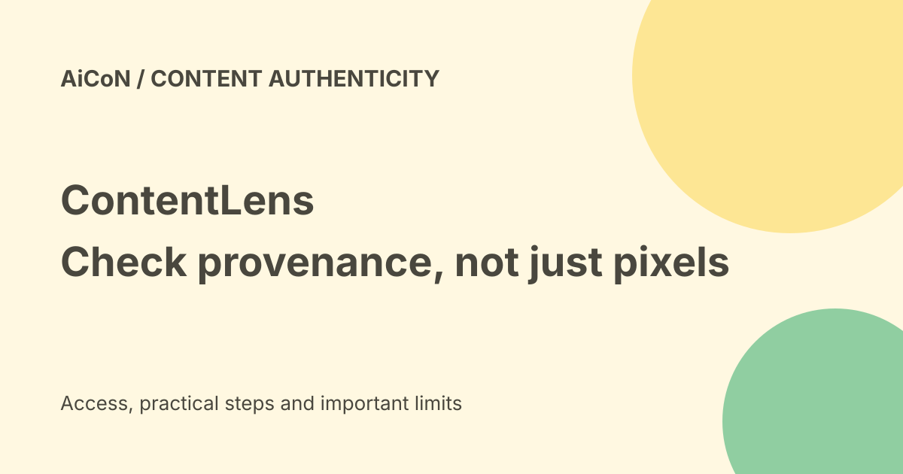

ContentLens: identity protection, watermarks and proof limits
ContentLens is a Bengaluru-based platform for identity and intellectual-property protection. Its public pages describe content credentials, invisible watermarks, fingerprinting and detection. Those tools can help investigate misuse, but they do not prove that every unlabelled image is fake or guarantee a takedown.

What is ContentLens?
The official site describes a platform for authenticity and intellectual-property protection. It names enterprise, public-figure, individual and technology-partner use cases. Its September 22 company press release describes celebrity likeness detection, music protection, C2PA provenance and watermarking, and counterfeit-brand detection.
The site lists Inborn Technologies Pvt. Ltd. in Bengaluru. The release calls it India's first and makes broad performance claims. Those are company claims, not an independently verified ranking or a guarantee that the service finds every misuse.
Three different tools
C2PA provenance metadata records information about a file's origin, changes and declared usage terms. It can make the record easier to inspect. A valid signed record does not itself prove that everything pictured is true, that ownership is legally settled or that a person consented.
The vendor describes imperceptible watermarking: markers not meant to be visible that help link a copy to provenance. It says the markers are robust to editing. Robust is not indestructible, and the checked pages do not provide an independent false-positive rate for every crop, compression or AI edit.
Fingerprinting represents features of content to search for similar copies without changing the original. Similarity, provenance and deepfake classification answer different questions. Keep those results separate when investigating a suspicious post.
Identity monitoring and takedowns
The company release says it builds a biometric signature covering a protected person's face, voice and visual identity, monitors social platforms, and sends the team alerts with evidence packages. That is the vendor's description of its service, not our test of platform coverage, speed or accuracy.
An evidence package can support a platform report or legal review. It is not an automatic court order, a guaranteed removal or proof that the company controls every social platform. Ask what sites are covered, what access is lawful and who reviews alerts before acting.
Is it free?
The checked official product pages did not establish a public subscription price or a free identity-monitoring allowance. Do not call the platform free just because a webpage can be opened. Ask the company for a written quote and scope before buying.
Separate onboarding, monitoring, API access, limits, storage and support costs. Ask whether evidence exports or takedown help are included. A browser extension or public validator is not necessarily the same service as continuous identity protection.
A careful evaluation route
- Start at the official site and choose the relevant use case.
- Ask for a demonstration on a sample you own or have permission to use.
- Get written coverage, pricing, error-rate and response-time information.
- Ask how originals, biometric signatures and alerts are stored, shared and deleted.
- Inspect example evidence yourself and confirm whether it distinguishes suspected matches from confirmed misuse.
- Agree on human review before reports, public accusations or legal action.
We did not submit media, create a biometric signature, install an extension or test monitoring. The site's linked privacy-policy PDF did not return readable policy content during this check, so retention and biometric-data terms remain unverified here.
India and privacy
An Indian company address does not establish India-only data storage or compliance for every use. Face and voice material can be sensitive. Obtain consent, share only necessary samples and review the actual contract and privacy policy before uploading personal data.
For a suspected scam, preserve the original URL, time and screenshots. Do not repost harmful material more widely to prove it exists. A qualified adviser can assess legal rights and the correct report route.
Frequently asked questions
Does no C2PA record mean a picture is fake?
No. Not all authentic files carry credentials.
Does a watermark guarantee protection?
No. It is a technical signal, with limits that need testing.
Was pricing or monitoring tested?
No.
What changed since the earlier post?
This guide separates the vendor's identity-monitoring claims from provenance tools, adds consent and privacy checks, and avoids a free-service or guaranteed-takedown claim.
Sources: Official platform · Provenance and watermark tools · Official use cases · Company release, not independent testing. Checked 8 October 2026.